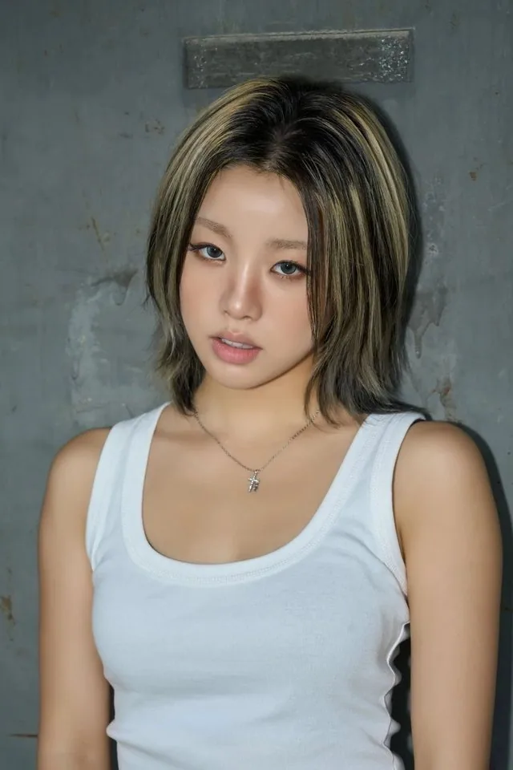
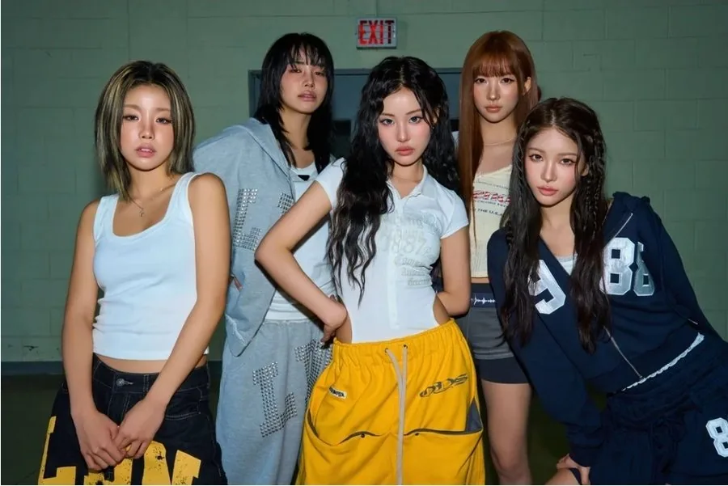
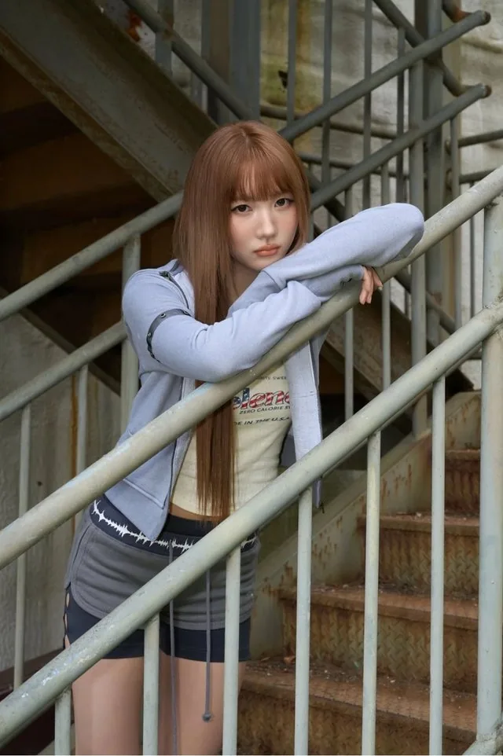
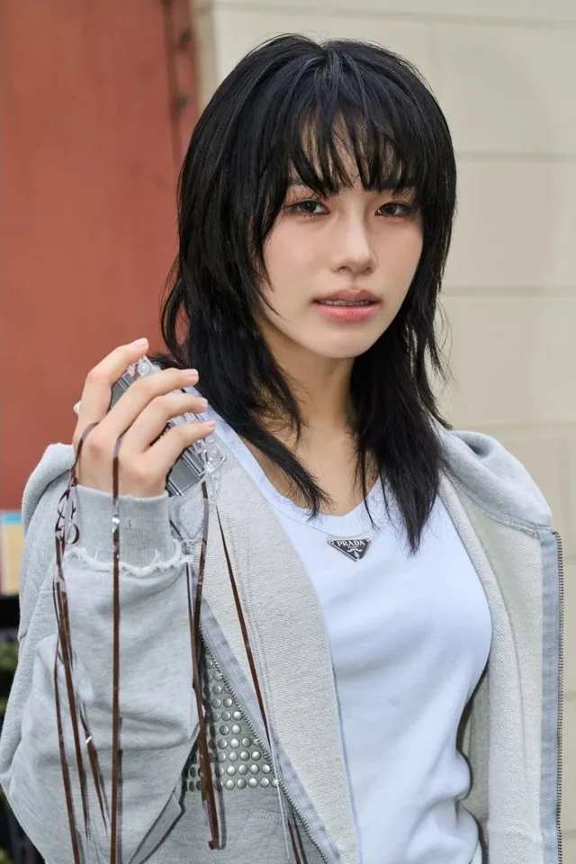

Sunhye
Sunhye (선혜) · Leader, Main Rapper, Sub Vocalist · Coréenne

K-POP
Découvre YOUNG POSSE et les profils de ses membres sur IBASE Asian Pop.
Ouvrir la fiche interactiveHistoire : YOUNG POSSE (영파씨) est un girl group de 5 membres de DSP Media, en collaboration avec Beats Entertainment : Sunhye, Yeonjung, Jiana, Doeun et Jieun. Il a débuté le 18 octobre 2023 avec son premier mini-album « MACARONI CHEESE ». Salutation officielle : « YOUNG~~~ PO! SSE! Hello, we are YOUNG POSSE! » Fandom : TELEPOSSE (텔레파씨), car les cœurs des fans qui aiment le groupe et ceux du groupe qui aime les fans sont connectés par télépathie (émoji officiel du fandom : 👾). Sens du nom et couleur officielle : non communiqués. Répartition des chambres (mise à jour en décembre 2024) : Sunhye & Yeonjung · Jiana · Doeun & Jieun.
Débuts : 18 octobre 2023 (premier mini-album « MACARONI CHEESE »)
Agence : DSP Media × Beats Entertainment

Sunhye (선혜) · Leader, Main Rapper, Sub Vocalist · Coréenne

Yeonjung (연정) · Main Dancer, Lead Rapper · Coréenne
Jiana (지아나) · Main Vocalist, Sub Rapper, Center · Coréenne

Doeun (도은) · Lead Rapper, Vocalist · Coréenne
Jieun (지은) · Lead Dancer, Lead Vocalist, Maknae · Coréenne